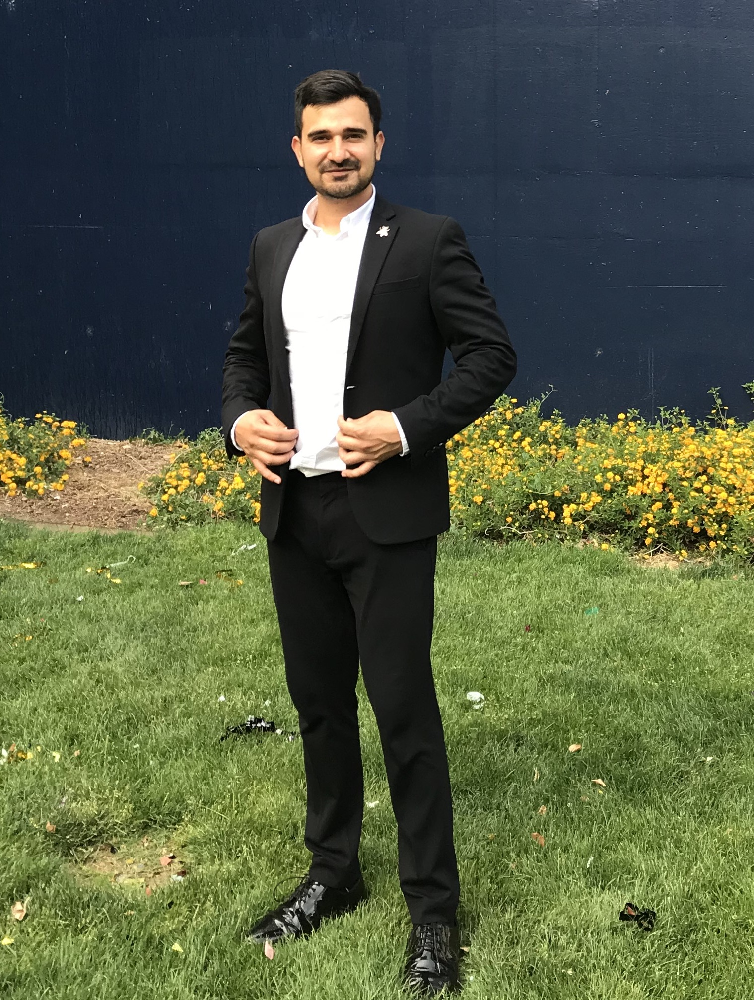

About Me
I am a theoretical physicist and Physics PhD candidate at UC Merced, working with Prof. Lin Tian on strongly coupled light–matter systems. At my core, I envision quantum systems and their behavior through effective Hamiltonian modeling and numerical methods—combining analytical techniques with sparse exact diagonalization and time-evolution solvers to uncover the spectrum, symmetries, and dynamics of closed and open quantum systems.
My doctoral research asks whether two coupled cavity–qubit systems can host a qubit encoded in hybrid light–matter (polariton) states through their static Hamiltonian, without continuous driving or engineered dissipation. I study the spectrum, symmetries, and closed- and open-system dynamics of this quantum Rabi dimer, and use electromagnetic simulations to assess a proposed superconducting-circuit implementation.
Alongside my dissertation work, I collaborate on Hamiltonian models of coupled magnon–photon systems at UC Merced, studied non-Hermitian spin-torque oscillator arrays during my M.S. at SJSU, and developed numerical routines for superconducting-qudit control and process tomography at Lawrence Livermore National Laboratory. I also have extensive experience teaching physics—including serving as a Teaching Assistant and delivering multiple guest lectures in Computational Physics—and channel my core mathematical and numerical logic into building scientific and educational software tools as side projects.
I am seeking research opportunities in theoretical quantum physics, quantum information, and computational physics across academia, national laboratories, and industry.
Current Research
Quantum Rabi dimer: from coupled cavities to polariton qubits
Coupling two cavities changes their collective photon modes. In my doctoral work, I examine how the softening of one mode reshapes the low-energy spectrum into hybrid light–matter (polariton) states, and characterize the parameter regime in which an isolated even–odd polariton doublet forms a candidate qubit codespace.
The central question is how much of this structure can arise from a static Hamiltonian, without an external drive or engineered dissipation to stabilize it.
- Spectrum and state structure. I combine normal-mode analysis with sparse exact diagonalization to identify low-energy doublets, resolve crossings using parity and site-exchange symmetry, and track states as the coupling changes.
- Closed- and open-system dynamics. I calculate coherent state evolution, macroscopic entanglement, and photon distributions, and study how photon loss affects the proposed encoding. This separates unitary Hamiltonian evolution within the doublet from decoherence and leakage.
- Circuit feasibility. I use COMSOL electromagnetic simulations and circuit models to extract mode frequencies, capacitances, impedances, and inductive participation. These calculations test which features of the theoretical model a proposed superconducting layout can realize and identify the remaining coupling constraints.
Status: Two manuscripts in preparation, covering the quantum Rabi dimer and its proposed superconducting-circuit realization. The circuit work is a modeling and feasibility study; experimental realization remains a future step.
The numerical work runs on SLURM clusters, with convergence checks and a version-controlled record of model conventions, simulation results, and open questions. An interactive simulation interface supports exploration of the model; unpublished code and results are available to discuss in interviews.
Technical Skills
- Theoretical physics & Hamiltonian modeling: Effective Hamiltonians for light–matter, magnon–photon, and driven spin systems; normal-mode and Bogoliubov analysis; symmetry-resolved spectra; polariton-based qubit encodings; and closed- and open-system quantum dynamics.
- Numerical methods: Sparse exact diagonalization, eigenstate tracking, unitary and master-equation time evolution, spectral and finite-difference PDE methods, convergence analysis, model fitting, and SLURM/HPC parameter sweeps.
- Circuit modeling: COMSOL electromagnetic simulation, capacitance and impedance extraction, and inductive participation analysis.
- Control and characterization: Pulse-level superconducting-qudit control, linear-inversion quantum process tomography, and Ramsey and T1/T2 analysis.
- Quantum error correction: Stabilizer simulation, correlated-noise models, Monte Carlo benchmarking, Stim, and PyMatching.
- Software: Python, NumPy, SciPy, QuTiP, Matplotlib, Flask, Git, Linux, pytest, and LaTeX; JavaScript and Google Cloud for web applications.
Research & Professional Experience
Graduate Student Researcher Tian Group, UC Merced · May 2023–Present
- Develop analytical and computational models of ultrastrong light–matter coupling in the quantum Rabi dimer with Prof. Lin Tian, connecting effective Hamiltonian structure and symmetries to energy spectra, collective modes, and polariton-qubit dynamics.
- Build sparse exact-diagonalization and closed/open-system simulation workflows for cluster computing, and assess a proposed superconducting circuit implementation through electromagnetic and circuit modeling.
Research Collaborator, Experimental Quantum Optics Sharping Group, UC Merced · 2024–Present
- Develop effective Hamiltonian models of coupled YIG–cavity systems to study magnon–photon spectra and entanglement, including inter-cavity coupling and parametric driving.
Physics Graduate Intern, Quantum Computing LLNL · May–Aug 2024
- Developed Python software for pulse-level control of superconducting qudits and evaluated gate sequences using quantum process tomography.
- Built a modular linear-inversion tomography pipeline to reconstruct process maps from experimental data using pseudo-inverse methods.
- Analyzed Ramsey fringes and T1/T2 measurements to characterize device behavior and inform control experiments.
Graduate Researcher Hurst Group, SJSU & UC Merced · Jun 2021–Jan 2024
- Derived analytical dispersion relations and built sparse numerical solvers for two-dimensional spin-torque oscillator arrays, characterizing oscillatory edge modes and robustness to disorder (published in Physical Review B).
Teaching Leadership
I help students connect physical intuition to mathematical models and numerical computation through discussion, laboratory instruction, and invited lectures.
Teaching Assistant (Computational & Introductory Physics) | UC Merced & SJSU (2021 – Present)
- Computational Physics & Core Curriculum: Served as Teaching Assistant across upper-division/graduate Computational Physics (PHYS 281) and foundational physics courses, guiding students in translating physical systems into numerical algorithms and mathematical models.
- Award Winning: Two-time recipient of the Outstanding Teaching Assistant Award (UC Merced 2026, SJSU 2022) for pedagogical excellence.
- Pedagogical Tools & Curriculum Design: Collaborated with faculty on inquiry-based laboratory exercises and designed the Physics Concept Analyzer Tool (PCAT) to help students structure physical assumptions and models before calculating.
Guest Lectures | UC Merced
- Computational Physics (PHYS 281): spectral methods for wave and Schrödinger PDEs. Course instructor and observing faculty: Prof. David Strubbe 2026
- Computational Physics (PHYS 281): Romberg integration. 2026
- Introductory Physics II (PHYS 09): Faraday’s law of induction. Course instructor and observing faculty: Prof. Jay Sharping 2026
- Computational Physics (PHYS 281): short presentation on the course project. Course instructor and observing faculty: Prof. David Strubbe 2024
Publications & Talks
View full publication list (PDF)
Peer-reviewed publication
Shivam Kamboj, Rembert A. Duine, Benedetta Flebus, and Hilary M. Hurst, "Oscillatory edge modes in two dimensional spin-torque oscillator arrays", Physical Review B 109, 094436 (2024). DOI: 10.1103/PhysRevB.109.094436
Manuscripts in preparation
Shivam Kamboj and Lin Tian, "Polariton Doublet Qubits in the Quantum Rabi Dimer", manuscript in preparation.
Shivam Kamboj, J. Beurkens, J. Sharping, and Lin Tian, "Superconducting realization of the Quantum Rabi Dimer", manuscript in preparation.
Selected presentations
Shivam Kamboj and Lin Tian, "The Instability Window: Macroscopic Entanglement and Delayed Symmetry Breaking in the Quantum Rabi Dimer", Quantum Industry Showcase, UC Santa Barbara (2026).
Shivam Kamboj and Lin Tian, "Adiabatic Evolution and Fock-state Mapping Across the Phase Boundary in a Quantum Rabi Dimer", Poster, APS Global Physics Summit (2026).
Shivam Kamboj, Y. Cho, and Y. J. Rosen, "Improving Fidelity of Quantum Gates Using Optimal Control", Poster, PLS Division Student Poster Symposium, Lawrence Livermore National Laboratory (2024).
Shivam Kamboj, "Simulating Quantum Systems, and Quantum Key Distribution", Invited Talk, Friday Seminar Series, Department of Physics, CSU Stanislaus (2024).
Shivam Kamboj and Hilary M. Hurst, "Topology of a Driven 2D Spin Torque Oscillator Array", APS March Meeting 2022, Chicago, Illinois. Abstract ID: T00.249
Hilary M. Hurst, Rembert A. Duine, Benedetta Flebus, and Shivam Kamboj, "Exploring non-Hermitian topology with spin-torque oscillator arrays", APS March Meeting 2022, Chicago, Illinois. Abstract ID: K52.002
Computational Physics & Side Projects
Alongside my core research in Hamiltonian modeling, I build interactive simulations and side software projects to explore physical models and support teaching.
Quantum Rabi Dimer Simulation Interface
Interactive numerical workbench for exploring energy spectra, photon-exchange dynamics, and cavity-interaction regimes in the two-site Quantum Rabi model. Recomputes and visualizes eigenstates and time evolution in real time across coupling regimes (Python, NumPy, Flask, JavaScript; private repository while manuscripts are in preparation).
Sparse Diagonalization for Spin-Torque Oscillator Arrays
Sparse-matrix diagonalization workflow for large two-dimensional spin-torque oscillator arrays, supporting calculations of complex non-Hermitian spectra and oscillatory edge modes. View Code on GitHub
Physics Concept Analyzer Tool (PCAT)
Web application deployed on Google App Engine for physics courses at UC Merced that guides students through concept identification, model assumptions, and mathematical setup before starting a calculation (Python, Flask, Google Cloud, JavaScript).
Additional Side Explorations
- nonmarkov_qec & Surface Code Simulations: Open-source Python package (nonmarkov_qec, benchmarks) and foundational distance-3 surface code notebook comparing stabilizer memory under temporally correlated dephasing against white-noise baselines.
- Quantum Key Distribution (BB84) Simulator: Interactive circuit simulation demonstrating state disturbance and eavesdropper detection in quantum cryptography (GitHub).
- Neural Network Digit Recognition: Feedforward and convolutional neural network experiments in TensorFlow/Keras (GitHub).
Outreach and Awards
- Recipient of Outstanding Graduate Teaching Award, UC Merced 2026
- Physics Graduate Group Summer Fellowship ($7,000), UC Merced 2026
- Physics Graduate Group Travel Fellowship ($750), UC Merced 2026
- Physics Graduate Group Summer Fellowship ($7,000), UC Merced 2025
- Advanced Quantum Testbed (AQT) Summit, Lawrence Berkeley National Lab — technical sessions on superconducting qubit scalability and quantum error mitigation 2025
- Physics Delegate, Graduate Student Association, UC Merced 2024
- Poster Presentation, PLS Division Student Poster Symposium, Lawrence Livermore National Lab 2024
- Invited Talk, "Simulating Quantum Systems", Friday Seminar Series, CSU Stanislaus 2024
- Member, Graduate Dean Advisory Council on Diversity (GDACD), UC Merced 2023
- Real World Quantum Computing Workshop, Lawrence Livermore National Lab 2023
- Recipient of Outstanding Teaching Assistant Award ($1,000), San Jose State University (certificate) 2022
- Mentor, Learning Assistant - Reflection, Guidance and Exploration (LA-RGE) Program (certificate) 2022
- IBM Quantum Challenge, Online Challenge Exam 2020
- First Position, "Tech-Invent" Competition — Presentation of a Silicon Particle Detector 2017